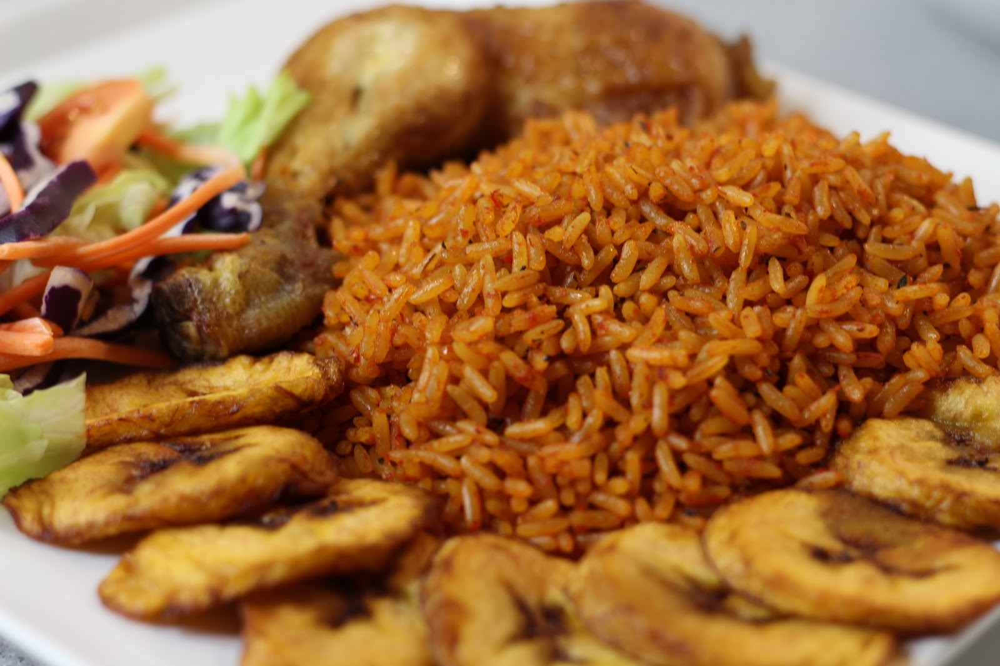

Odin Recipes
Nigerian Jollof

Making the famous Nigerian Jollof Rice is a delicate process but that is why I am here to make it as easy for you.
Be careful to follow the steps carefully for an authentic Nigerian taste, but first. let is start with the ingredients.
ingredients:
- 2 cups long-grain parboiled rice
- 1/4 cup vegetable oil
- 1 medium onion, chopped
- 4 medium tomatoes, blended
- 2 red bell pepper, blended
- 1 scotch bonnet, blended (optional)/li>
- 4 cups of chicken or vegetable stock
- salt, to taste
- 2 bouillon cubes (or seasoning cubes)
Now here comes the magic...
Steps
-
Prepare the Rice:
- Rinse the rice under cold water until the water runs clear to remove excess starch. Set aside.
-
Make the Tomato Base:
- Heat the vegetable oil in a large pot over medium heat. Add the chopped onions and sauté until soft.
- Add the tomato paste and fry for about 3 minutes, stirring constantly to prevent burning.
- Pour in the blended tomatoes, red bell peppers, and scotch bonnet (if using).
Cook the mixture on medium heat, stirring occasionally until the sauce reduces
and the oil starts to separate from the tomato mixture (about 10-15 minutes).
-
Season the Tomato Base:
- Add the chicken or vegetable stock, seasoning cubes, and salt to taste. Stir and bring the mixture to
a boil.
-
Cook the Rice:
- Add the rinsed rice to the pot, stir well to ensure the rice is evenly coated with the tomato mixture.
- Reduce the heat to low, cover the pot with a tight-fitting lid or aluminum foil, and let the rice cook for
about 20-30 minutes. Avoid opening the pot frequently to keep the steam inside.
-
Check and Finish Cooking:
- After 20-30 minutes, check the rice. If it's not fully cooked and the liquid is absorbed, add a little more
water or stock and allow it to cook for another 5-10 minutes until the rice is tender.
-
Serve
- Serve and enjoy your Jollof Rice HOT